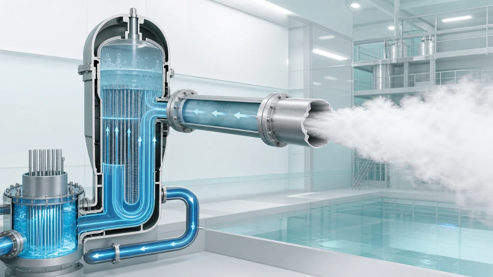
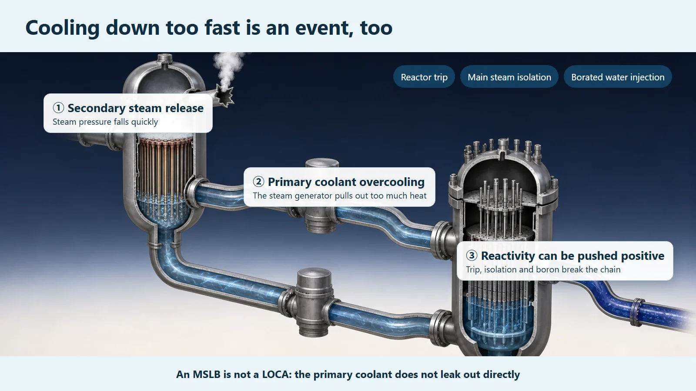
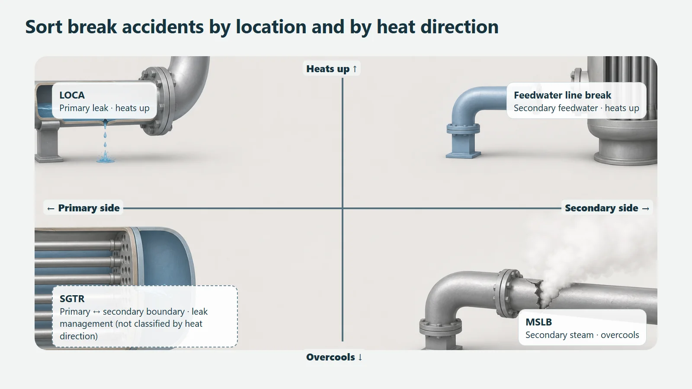

Safety Principles & Accident Analysis · 209
The Myth That Colder Is Always Safer — The Main Steam Line Break Accident
When the main steam line bursts, the reactor cools down too fast. Because water is also the moderator, overcooling pushes reactivity up instead of calming things down.

A main steam line break (MSLB) is an overcooling accident: a secondary-side steam pipe bursts, steam rushes out, and the reactor is cooled too fast. Because the coolant is also the moderator, colder, denser water adds positive reactivity, so the plant must guard against a push toward restarting even after shutdown. Reactor trip, main steam isolation, feedwater control and borated water injection hold it in check.
Why not cool it as hard as possible?
When we worry about a reactor, the instinctive prescription is a single word: "cool it." So why not push cooling to the maximum and pull out all the heat at once? Yet nuclear plant designers lose sleep preparing for exactly this kind of "cooling down too fast" situation. Today's topic, the main steam line break, is the classic example. Picture a big boiler in a building's basement and the story falls into place.
A big pipe running from the boiler room next to the reactor
A pressurized water reactor has large components called steam generators. Water heated in the core (the primary coolant) flows through thousands of thin tubes inside them and boils other water outside those tubes (the secondary-side water) into steam. That steam travels through a large pipe to the turbine, where it makes electricity. This large pipe, the path that carries steam from the steam generator to the turbine, is the main steam line.
In building terms, the steam generator is the basement boiler room, and the main steam line is the thick steam pipe running up through the building. The key point is that this pipe is not the path the primary coolant flows through; it is on the secondary side, outside it. So even if this pipe bursts, the reactor's coolant does not leak out directly.
When the pipe bursts, the boiler blows off steam like mad
Now suppose this pipe ruptures. The trapped steam rushes out through the break, and pressure on the secondary side plunges. With lower pressure, the water inside the steam generator boils violently even at a lower temperature and leaves as steam. It is as if the boiler suddenly started blowing off steam with nothing to control it.
The trouble is that this is not just steam. Even at that moment, the steam generator is the window through which the core's heat is handed over and discarded, and with its water boiling furiously, it pulls heat out of the primary coolant much faster than usual. The result is rapid cooling of the reactor. So a main steam line break is not an accident in which the reactor "heats up because it can't get rid of heat." Quite the opposite: it is an overcooling accident, in which the reactor cools down too fast because it gets rid of heat too well.
The twist: it was cooled, so why does power try to rise?
Here comes the real twist. The water in the reactor is the coolant, but it is also the moderator, slowing neutrons down so that fission happens more readily. When water gets colder, its density goes up and it becomes more tightly packed, and tightly packed water slows neutrons down more effectively. Slower neutrons cause fission more readily.
In short: the coolant cools quickly → the water becomes denser → neutrons are slowed more effectively → fission tends to become more active. Excessive cooling adds a push that actually encourages fission (positive reactivity). The common sense that "cooling always calms things down" is neatly turned on its head.
So the central concern in this accident is that, even after the reactor has shut down automatically (control rods inserted), continued overcooling keeps adding this push and could nudge the core back toward restarting its reaction. (Whether that actually happens, and by how much, depends on the reactor, the core and its burnup; it is a design-specific analysis result, so it is described here only as a concern.)
So it is held in check in layers
A nuclear plant does not leave this situation alone. Several layers of safety features step in, in order. First, when the abnormal condition is detected, the reactor shuts down automatically, driving in the control rods. At the same time, the main steam isolation valves close, so that the other, intact steam generators do not join in blowing off steam and send the cooling into a runaway. Feedwater is also controlled so that water keeps flowing into the broken side and does not increase the cooling.
Then comes the decisive move: water with dissolved boron, which absorbs neutrons, is injected into the core. The boron's "push that suppresses fission" cancels the "push that encourages fission" added by overcooling, holding the core quiet. Each layer is stacked so that if one falls short, the next one holds.

A bonus: rapid cooling startles structures too
One more thing. Pour cold water into a hot, thick glass and it can crack with a snap, because a sudden temperature change creates stress inside a thick structure. The reactor pressure vessel is also a very thick, strong steel structure, so if the coolant cools rapidly while the pressure stays high, thermal stress can build up in its wall. That is why overcooling accidents are examined not only for reactivity but also from this thermal-shock point of view. (How large this concern really is depends on design-specific evaluation, such as the material and its neutron exposure history, so no values are quoted here.)
Neighbors that look alike but aren't
Accident names all sound alike and are easy to confuse, so it helps to sort them by direction. There are just two keys: where did the break happen (primary or secondary side), and does the reactor end up heating up or cooling down.

| Accident | Where it breaks | Heat direction |
|---|---|---|
| Loss-of-coolant accident (LOCA) | Primary side | Heats up |
| Feedwater line break | Secondary side (water in) | Heats up |
| Main steam line break (MSLB) | Secondary side (steam out) | Cools down |
| Steam generator tube rupture (SGTR) | Primary–secondary boundary | Concern is the leak, not heat direction |
A loss-of-coolant accident is a break in a primary-side pipe that loses coolant, so the core heats up, and the response is to refill water. A main steam line break is a break on the secondary side that makes the reactor cool down. And even on the secondary side, if the feedwater line that brings water into the steam generator breaks, there is too little water to carry heat away, so the reactor heats up instead. Same location, opposite direction. A steam generator tube rupture, a break in the tubes that separate the primary and secondary sides, is a different kind of problem again: the concern is the leak from primary to secondary rather than heating or cooling.
Key takeaways
- A main steam line break is an overcooling accident: the large secondary-side steam pipe between the steam generator and the turbine bursts, steam rushes out, and the reactor cools down too fast. It is not an accident in which primary coolant leaks out directly.
- Because the coolant is also the moderator, rapid cooling makes the water denser and adds positive reactivity that encourages fission, the point where "cooling always calms things down" is turned upside down.
- So even after the reactor shuts down, the plant guards against the push to restart, holding it in check in layers: automatic shutdown, main steam isolation valves, feedwater control and borated water injection.
- Rapid cooling can also put thermal shock on the thick pressure vessel, so structural integrity is examined too.
- When accident names get confusing, sort them by "where did it break (primary or secondary)" and "does it heat up or cool down," and the loss-of-coolant accident, feedwater line break and tube rupture separate cleanly.
That reactor safety treats even "cooling too well" as an event shows how nuclear plants view heat and reaction as one system, and prepare in layers.